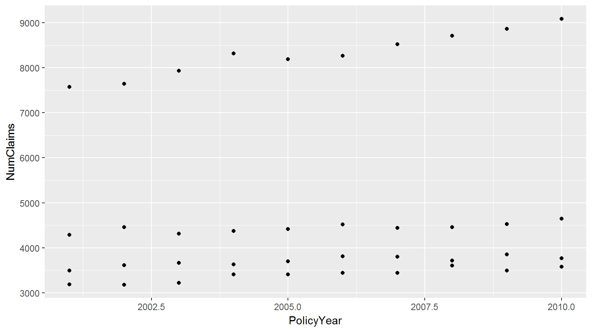
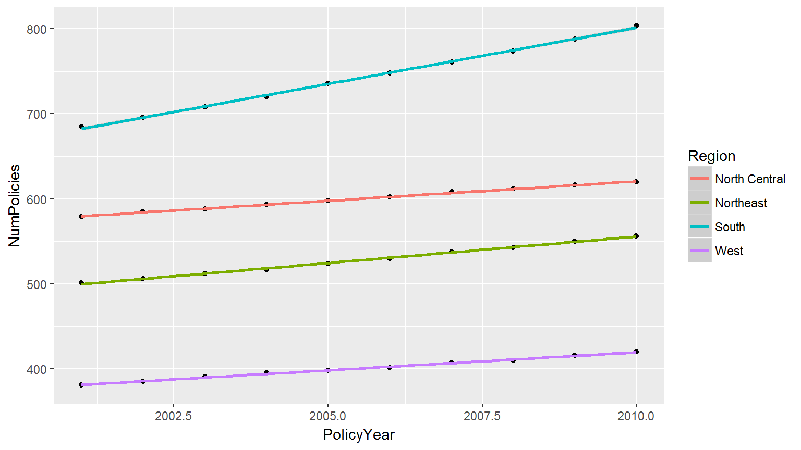

Visualization
Base plotting
Base plotting
library(raw)
## Warning: package 'raw' was built under R version 3.4.4
data("RegionExperience")
plot(RegionExperience$PolicyYear, RegionExperience$NumClaims)Add labels
plot(
RegionExperience$PolicyYear
, RegionExperience$NumClaims
, pch = 19
, xlab = 'Policy Year'
, ylab = '# of claims')Base plotting
- Kinda ugly
- Customization is possible, but tedious
ggplot
ggplot2
gg = “grammar of graphics” based on Leland Wilkinson
- Data
- Mapping
- Geometric layers
- Scales
Data
Data
library(ggplot2)
library(dplyr)
plt_base <- ggplot(RegionExperience)
plt_base
data(COTOR2)
ggplot(COTOR2)
## Error: ggplot2 doesn't know how to deal with data of class numericData
Data must use a data frame.
ggplot(1:10)
## Error: ggplot2 doesn't know how to deal with data of class integerMapping
Mapping
Mappings bind data to visual elements. Every data-derived visual element must be mapped to data.
plt_base <- plt_base + aes(x = PolicyYear, y = NumClaims)
plt_base <- ggplot(RegionExperience, aes(PolicyYear, NumClaims))Layers
Adding layers
Although we have data and we’ve mapped to elements of a coordinate system, we haven’t specified what the visual elements should be. The geom_* family of functions add geometric shapes.
plt_base <- plt_base + geom_point()
plt_base
One step
RegionExperience %>%
ggplot(aes(x = PolicyYear, y = NumPolicies)) +
geom_point()Try multiple layers
RegionExperience %>%
ggplot(aes(x = PolicyYear, y = NumPolicies)) +
geom_point() +
geom_line()Try that again
RegionExperience %>%
ggplot(aes(x = PolicyYear, y = NumPolicies)) +
geom_point() +
geom_line(aes(color = Region))ggplot vs geom_X
ggplot(data, mapping)
geom_X(mapping, data)Statistical smoothers
RegionExperience %>%
ggplot(aes(x = PolicyYear, y = NumPolicies)) +
geom_point() +
geom_smooth(method = lm, aes(color = Region))
Scales
Store a basic plot in an object
plt <- RegionExperience %>%
ggplot(aes(x = PolicyYear, y = NumClaims)) +
geom_point()Change the y scale
plt + scale_y_continuous(labels = scales::comma)Change the x breaks
plt + scale_x_continuous(breaks = 2001:2010)Change the x breaks
my_breaks <- function(lims) {
seq(ceiling(lims[1]), floor(lims[2]), by = 1)
}
plt + scale_x_continuous(breaks = my_breaks)Facets
Facets
Facets split the data into groups and draws a different plot for each group.
ggplot(RegionExperience, aes(x = PolicyYear, y = NumClaims, color = Region)) +
geom_point() +
facet_wrap(~ Region)Non-data visual elements
Non-data visual elements
- labels
- gridlines
- legend
- axis ticks
Labels
plt + labs(x = 'Policy year', y = '# of claims')Gridlines
Summary
ggplot2is different at first, but will repay your investment.- Works very well with grouped data to color/facet points.
- Fine-tuning things like axis labels can be a headache, but will get easier. Yes, Excel makes it easier to add data labels and change colors.
ggplot2makes it easier to work with data.